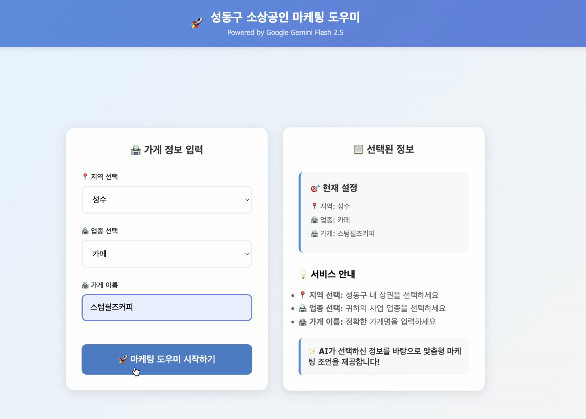
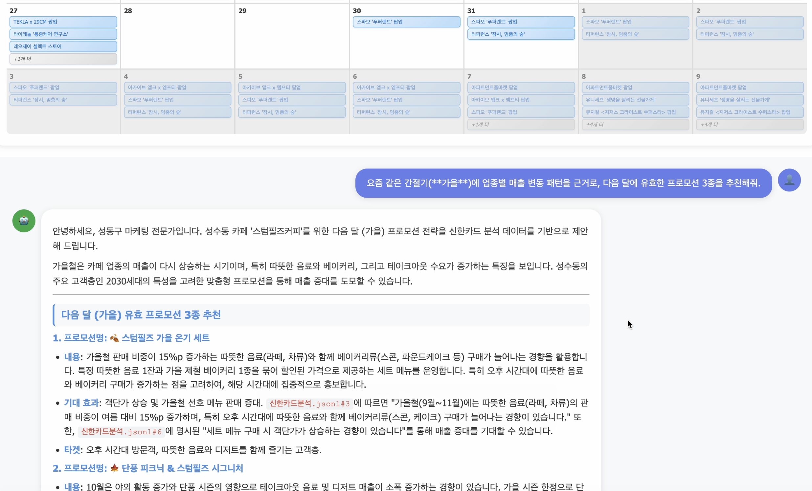

썸네일

썸네일
성동구 소상공인 AI 마케팅 도우미 'Sentinel'
2025.12제13회 빅데이터 빅콘테스트장려상 (3인, 팀 리더 및 AI 아키텍처 설계)
소상공인의 마케팅 업무 효율화를 위해 지역 상권 및 업종 데이터를 활용한 RAG 기반 지능형 에이전트 서비스입니다.
역할: PM/AI 개발 | 질문 유형 자동 분류 및 멀티 에이전트 구현, 신한카드·공공데이터 4종 기반 RAG 파이프라인 구축, Flask API 서버 구축 및 배포.
성과: 태스크별 검색 정책을 통해 근거 있는 마케팅 조언을 일관되게 생성하는 데모를 완성했으며, 실전적인 AI 서비스 구현 역량을 입증했습니다.